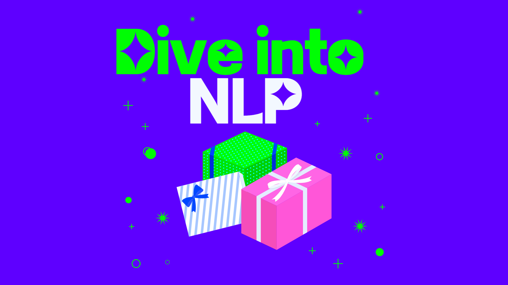

Post: Dive into NLP

Dive Into NLP
자연어 처리를 공부합시다.
자연어 처리(自然語處理) 또는 자연 언어 처리(自然言語處理)는 인간의 언어 현상을 컴퓨터와 같은 기계를 이용해서 모사할 수 있도록 연구하고 이를 구현하는 인공지능의 주요 분야 중 하나 (출처: 위키피디아)
자연어처리의 주요 분야
자연어처리의 주요 분야를 알아봅시다.
1. NLP (ACL, EMNLP, NAACL)
자연어 처리의 대표적인 학회는 ACL, EMNLP, NAACL 이 있습니다.
주요 분야는 아래를 참고하세요.
- machine translation -> 기계 번역
- Sentiment analysis
- dialog systems -> 챗봇 🔥
- summarization
- Named entity recognition (NER) -> 객체에 이름 부여하기 (인식의 문제)
- 텍스트 생성
- Spam Detection : 스팸 디텍션
2. Text mining (KDD, WWW, WSDM, CIKM, ICWSM)
- 비정형 데이터로부터 유용한 정보를 찾기
- 추천 시스템
- MRC -> 기계 독해
- MRC란 인공지능이 사람처럼 문서를 읽고 이해한 후 질문에 정확히 답하는 기술
3. Information retieval (SIGIR, WSDM, CIKM, RecSys)
- 추천 시스템
- Keyword Search
NLP 의 역사
NLP 는 최근 들어서 급속도로 연구되고 발전하고 있는 분야입니다.
- RNN
- LSTRM
- GRU
- Transformer `Àttention all you need`
- NLP의 혁명, AI 의 혁명
- BERT, GPT
- self-supervised learning
요즘엔 NLP 의 혁명을 주도하는 곳은 거대 기업이라고 할수 있다. 왜냐하면 거대 모델은 거대한 학습이 필요하기 때문이다. 개인 개발자가 할 수 있는 것은 무엇인가? AI 는 플랫폼 독점으로 나갈 것인가? 생각이 필요합니다.
문장 분해하기
Tokenization
stemming
한국어 자연어 처리 모델
- KoNLPy
- 카카오
- 은전한닢
- KT~
[고전] - BOW(Bag of Words)
단어들의 순서를 고려하지 않습니다. 출현 빈도만 고려해서 텍스트를 분석하는 기법을 말합니다. 즉, 가방에다가 단어들을 넣어 놓고 ‘뭐’ 가 ‘몇개’ 있는 지를 보는 아주 직관적인 방법으로 볼 수 있는 것이죠.
나이브 베이즈 분류기
우리 나이브 베이스 분류기를 공부해봅시다.
[고전] - TF-IDF(Term Frequency - Inverse Document Frequency)
특정 문서에 특정 단어가 얼만큼 있는지 값을 표현하는 것. TF(단어 빈도, term frequency) 특정 단어가 문서 내에 얼마나 자주 등장하는 지 ? DF(문서 빈도, document frequency) 단어 자체가 전체 문서에서 사용되는 지 One hot encoding 으로 표현합니다. -> 단어 간의 유사성을 파악하지 못하는 문제가 있습니다.
Word Embedding
현대 nlp의 근간이 되는 기술입니다.
연관성 있는 단어들을 군집화하여 multi-dimension 공간에 vector 로 표시
단어나 문장을 vector space 로 끼워 넣음 (embedding)
k 번째 단어인 one hot encoding 와 word embedding matrix 를 곱하면 k 번째 로우가 k 번째 단어를 설명하는 weigts 가 된다.
Word2Vec
구글이 2013년 개발했습니다. -> by 비지도학습 중심단어로부터 주변단어를, 주변단어로부터 중심 단어를 임베딩 시키는 방식으로 학습합니다. 그 코사인 유사도가 유사하도록 한다.
Glove(Global Vectors for Word Representation)
2014, Stanford 말뭉치 전체를 고려한 word embeding
FastText
2016, Facebook 희소한 단어가 학습되지 않는 문제점을 해겼다. 다양한 용언을 가진 한국어의 특성에 잘 맞습니다.
RNN
시퀀스데이터 history 전달
- one to one -> 이미지 분류
- one to many -> 이미지로부터 문장 생성, 작곡
- many to one -> 감성 분석, 생성 모델
- many to many -> 기계 번역, 챗봇, Q&A
LSTM
새로운 입력을 어떻게 받을 것인지 forget gate, update gate, output gate 가 있수다.
GRU
lstm의 gate 를 하나로 줄인것.
Sentiment Analysis
NER (개체 인식)
Language Model
- 이전으로부터 다음을 예측하기
-
기계 번역 Qna chatbot speech recognition text summarization text to speech(tts) image caption
Seq2Seq(Encoder-decoder)
Machine Translate 분야에 사용된다.
챗봇을 만들어보자.
기계 번역 평가 알고리즘
- BLUE
Transformers
2017 - Transformer 현재 딥러닝은 트랜스포머 이전과 이후라 나뉩니다.
Transfer Learning (전이학습)
ELMO
- 마지막 RNN 모델ㅇ
BERT
2018 - Bert
GPT
2020 - GPT 3